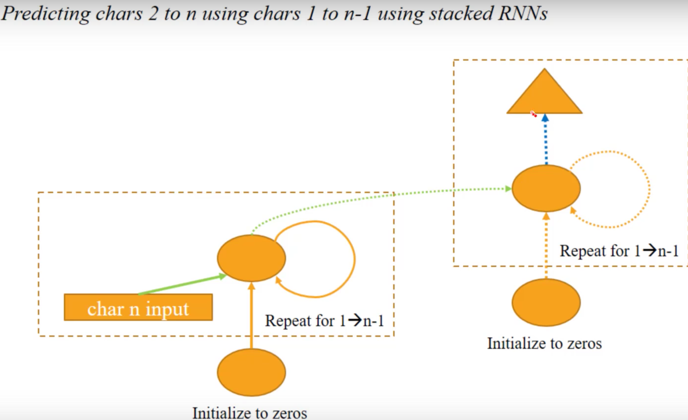

Fast.ai Lesson 6 Review
Matthew Emery [@lstmemery]
- Use cases for RNNs
- Three Character Model
- Nth Character Model
- Sequential RNNs
- Stateful RNNs
- RNN in Theano
Some changes to Jeremy's Code
Migrated from Keras 1 to 2
Migrated from Python 2 to 3
Using a Tensorflow backend (instead of Theano)
Only important difference: Had to remove extra dimensions for some training
Use cases for RNNs
- Anything that requires knowledge of long term structure
- Text data
- Sequential data
- Time series
Three Character Model

Mapping characters to integers
char_indices = dict((c, i) for i, c in enumerate(chars))
indices_char = dict((i, c) for i, c in enumerate(chars))
Inputs and output
cs=3
c1_dat = [idx[i] for i in range(0, len(idx)-1-cs, cs)]
c2_dat = [idx[i+1] for i in range(0, len(idx)-1-cs, cs)]
c3_dat = [idx[i+2] for i in range(0, len(idx)-1-cs, cs)]
c4_dat = [idx[i+3] for i in range(0, len(idx)-1-cs, cs)]
This creates a list of numbers.
We need a matrix. So we create an embedding
Embedding
n_fac is a hyperparameter
def embedding_input(name, n_in, n_out):
inp = Input(shape=(1,), dtype='int64', name=name)
emb = Embedding(n_in, n_out, input_length=1)(inp)
return inp, Flatten()(emb)
Parameters: 3570
Input to Hidden Layer
n_hidden = 256
dense_in = Dense(n_hidden, activation='relu')
c1_hidden = dense_in(c1)
Parameters: 11008
Hidden to Hidden Layer
from keras.layers.merge import add as merge_add
dense_hidden = Dense(n_hidden, activation='relu')
c2_dense = dense_in(c2)
hidden_2 = dense_hidden(c1_hidden)
c2_hidden = merge_add([c2_dense, hidden_2]) # Element-wise sum
Parameters: 65792
Hidden to Output Layer
c3_dense = dense_in(c3)
hidden_3 = dense_hidden(c2_hidden)
c3_hidden = merge_add([c3_dense, hidden_3])
dense_out = Dense(vocab_size, activation='softmax')
c4_out = dense_out(c3_hidden)
Parameters: 21845
Nth Character Model
RNN forms:
- Unrolled Form (previous example)
- Recurrent Form (next example)
Note: Jeremy mentioned that Tensorflow does not have the ability to make recurrent form RNNs.
This is no longer true. Use `tf.nn.dynamic_rnn`.

dense_in = Dense(n_hidden, activation='relu')
dense_hidden = Dense(n_hidden, activation='relu',
kernel_initializer="identity")
dense_out = Dense(vocab_size, activation='softmax')
Combining layers
hidden = dense_in(c_ins[0][1])
for i in range(1,cs):
c_dense = dense_in(c_ins[i][1])
hidden = dense_hidden(hidden)
hidden = merge_add([c_dense, hidden])
c_out = dense_out(hidden)
This is common architecture. So Keras already has a version of it.
Keras: SimpleRNN
model=Sequential([
Embedding(vocab_size, n_fac, input_length=cs),
SimpleRNN(n_hidden, activation='relu',
recurrent_initializer='identity'),
Dense(vocab_size, activation='softmax')
])
By setting recurrent_initializer = identity means do nothing by default
Parameters of Dense layer: 22102
Parameters of SimpleRNN: 76544
Sequential RNNs
Previously...
Now
The output of one step is the input of the next step
c_in_dat = [[idx[i+n] for i in range(0, len(idx) - 1 - cs, cs)]
for n in range(cs)]
c_out_dat = [[idx[i+n] for i in range(1, len(idx) - cs, cs)]
for n in range(cs)] # This changed
The input also changes
inp1 = Input(shape=(n_fac,), name='zeros')
hidden = dense_in(inp1)
outs = []
for i in range(cs):
c_dense = dense_in(c_ins[i][1])
hidden = dense_hidden(hidden)
hidden = merge_add([c_dense, hidden], mode='sum')
# every layer now has an output
outs.append(dense_out(hidden))
Eight outputs means eight binary cross entropies to manage
This is easy in Keras
model=Sequential([
Embedding(vocab_size, n_fac, input_length=cs),
SimpleRNN(n_hidden,
return_sequences=True,
activation='relu',
recurrent_initializer='identity'),
TimeDistributed(Dense(vocab_size, activation='softmax')),
])
Two differences
- return_sequences=True
- TimeDistributed wrapped around Dense
Stateful RNNs
- We want to model long-term dependencies
- The RNN needs to be aware of ALL of the previous sequence
- This was impossible until the creation of Long-Short Term Memory
- An LSTM replaces the hidden-to-hidden matrix with another neural net
- LSTMs are difficult to parallelize. Training is slower
First Model
model=Sequential([
Embedding(vocab_size, n_fac, input_length=cs,
batch_input_shape=(bs, 8)),
BatchNormalization(),
LSTM(n_hidden, return_sequences=True, stateful=True),
TimeDistributed(Dense(vocab_size, activation='softmax')),
])
Batch Normalization was required to get this model running
BatchNorm Parameters: 168
LSTM Parameters: 306176
Stacked RNN

model=Sequential([
Embedding(vocab_size, n_fac, input_length=maxlen),
LSTM(512, recurrent_dropout=0.2, return_sequences=True,
dropout=0.2, implementation=2, input_shape=(n_fac,)),
Dropout(0.2),
LSTM(512, dropout=0.2, recurrent_dropout=0.2,
return_sequences=True),
Dropout(0.2),
TimeDistributed(Dense(vocab_size)),
Activation('softmax')
])
This will take a long time to train but gives the best results we've seen so far
Theano RNN
Sparse Categorical Cross-entropy just converts integer to a one-hot encoding implicitly
We to make this explicit for Theano
model=Sequential([
SimpleRNN(n_hidden, return_sequences=True,
input_shape=(cs, vocab_size),
activation='relu',
recurrent_initializer="identity"),
TimeDistributed(Dense(vocab_size, activation='softmax')),
])
model.compile(loss='categorical_crossentropy', optimizer=Adam())
Theano
- Manipulates tensors in the GPU
- Automatic Differentiation
- Need to declare upfront for computational graph
- Used shared to claim an array for theano
- Breaks CUDA when you try upgrade it the day before a presentation
Initialization
def init_wgts(rows, cols):
scale = math.sqrt(2 / rows)
return shared(normal(scale=scale,
size=(rows, cols)).astype(np.float32))
def init_bias(rows):
return shared(np.zeros(rows, dtype=np.float32))
Initialization
def init_wgts(rows, cols):
scale = math.sqrt(2 / rows)
return shared(normal(scale=scale,
size=(rows, cols)).astype(np.float32))
def init_bias(rows):
return shared(np.zeros(rows, dtype=np.float32))
def wgts_and_bias(n_in, n_out):
return init_wgts(n_in, n_out), init_bias(n_out)
def id_and_bias(n):
return shared(np.eye(n, dtype=np.float32)), init_bias(n)
Announcing to Theano
t_inp = T.matrix('inp', dtype="float32")
t_outp = T.matrix('outp', dtype="float32")
t_h0 = T.vector('h0', dtype="float32")
lr = T.scalar('lr', dtype="float32")
all_args = [t_h0, t_inp, t_outp, lr]
W_h = id_and_bias(n_hidden) # Hidden-to-hidden
W_x = wgts_and_bias(n_input, n_hidden) # Input-to-hidden
W_y = wgts_and_bias(n_hidden, n_output) # Hidden-to-output
w_all = list(chain.from_iterable([W_h, W_x, W_y]))
Scanning
def step(x, h, W_h, b_h, W_x, b_x, W_y, b_y):
# Calculate the hidden activations
h = nnet.relu(T.dot(x, W_x) + b_x + T.dot(h, W_h) + b_h)
# Calculate the output activations
y = nnet.softmax(T.dot(h, W_y) + b_y)
# Return both (the 'Flatten()' is to work around a theano bug)
return h, T.flatten(y, 1)
[v_h, v_y], _ = theano.scan(step, sequences=t_inp,
outputs_info=[t_h0, None],
non_sequences=w_all)
Gradients
error = nnet.categorical_crossentropy(v_y, t_outp).sum()
g_all = T.grad(error, w_all)
def upd_dict(wgts, grads, lr):
return OrderedDict({w: w - g * lr for (w, g)
in zip(wgts, grads)})
# This is gradient descent!
upd = upd_dict(w_all, g_all, lr)
fn = theano.function(all_args, error, updates=upd,
allow_input_downcast=True)
Updates
err=0.0; l_rate=0.01
for i in range(len(X)):
err += fn(np.zeros(n_hidden), X[i], Y[i], l_rate)
if i % 1000 == 999:
print ("Error:{:.3f}".format(err / 1000))
err=0.0
Answers
f_y = theano.function([t_h0, t_inp], v_y,
allow_input_downcast=True)
pred = np.argmax(f_y(np.zeros(n_hidden), X[6]), axis=1)
act = np.argmax(X[6], axis=1)
[indices_char[o] for o in act]
[indices_char[o] for o in pred]